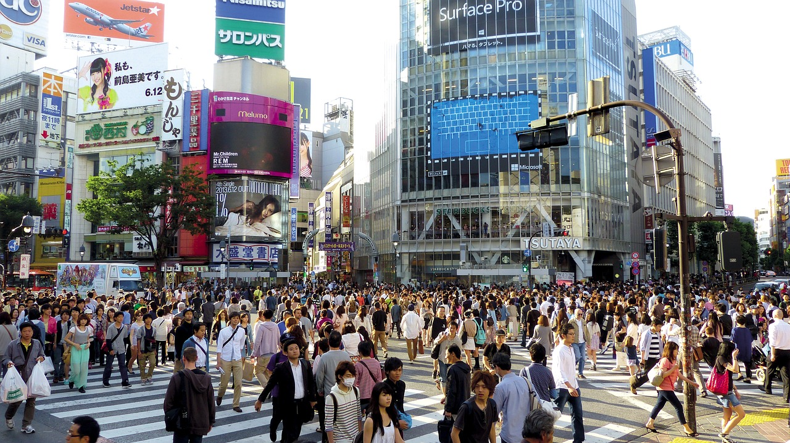

First founded in 1603 as Edo, Tokyo is rich with history. Over the years, the city has only developed, growing into one of the most populous and diverse cities worldwide. As such, there is something for everyone.
Below, I have compiled my top 5 must see sights when in Tokyo!
- Tokyo Skytree
- The Tokyo Skytree is easily one of the most recognizable landmarks in Toyko's skyline. Standing at 634 meters, the world's tallest tower is still in use as a telivision broadcasting center today! Visitors can visit the two observation decks to appreciate Tokyo from above.
- Senso-Ji
- Located in the heart of Asakusa, Sensoji is Tokyo's oldest temple. After appreciating the traditional Buddhist architecture, visitors can stop at several nearby stalls to purchase gifts and yummy snacks.
- Shibuya Crossing 
- The world's busiest crossing is a must-see when visiting Tokyo. Although the crossing itself doesn't take a lot of time to see, it is conveniently located in the heart of Shibuya City and a short walk to adjacent Harajuku and Shinjuku.
- Harajuku (Takeshita Street)
- Harajuku, and specifically Takeshita Street, is a narrow street lined with cafes, boutiques, and shops. Visitors can find almost anything here, from animal cafes to crepe stalls and much more.
- Tokyo Station
- Tokyo Station is one of the most architecturally striking buildings in the whole of Tokyo, with a beautiful dome, patterned floors, and floor-to-ceiling columns lining the departure hall. The area is also filled with a myriad of restaurants and stores, perfect for visitors wishing to explore and shop.

Licensed under Pixabay License

Licensed under Pixabay License
Licensed under Pixabay License

Licensed under Pixabay License
Licensed under Pixabay License